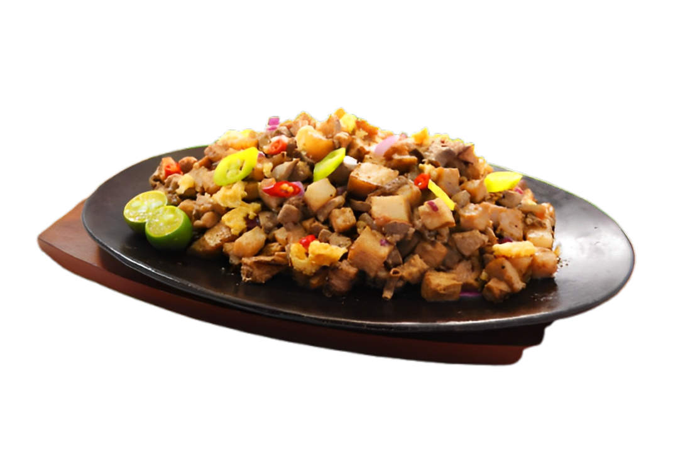
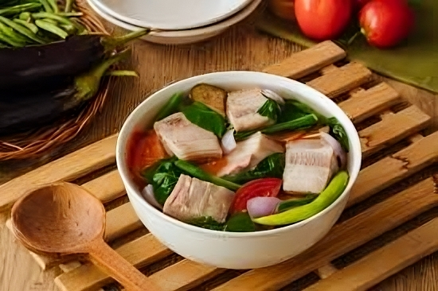

Savory braised pork with soy sauce, vinegar, garlic, and spices.
Crispy spring rolls filled with seasoned ground pork, vegetables, and spices.
Hearty stew of pork, liver, potatoes, carrots, and tomato sauce.
Comforting stew of pork, bananas, potatoes, cabbage, and tomato-based broth.
Tangy soup with pork, tamarind broth, and assorted vegetables.

a. Pork shoulder
b. Soy sauce
c. Vinegar
d. Garlic
e. Onion
f. Tomato sauce
g. Bay leaves
h. Black pepper
i. Sugar
1. Marinate the pork in soy sauce, garlic, and black pepper for at least 30 minutes.
2. Heat oil in a pan and brown the pork on all sides.
3. Add onions, tomato sauce, vinegar, sugar, and bay leaves to the pan.
4. Simmer until the pork is tender and the sauce has thickened.
5. Serve with steamed rice.
a. Ground pork
b. Carrots
c. Garlic
d. Onion
e. Spring roll wrappers
f. Salt and pepper
1. Combine ground pork, carrots, garlic, onion, salt, and pepper in a bowl.
2. Wrap small portions of the mixture in spring roll wrappers.
3. Heat oil in a pan and fry the rolls until golden brown.
4. Drain excess oil and serve with sweet chili sauce.

a. Pork cubes
b. Liver
c. Potatoes
d. Carrots
e. Tomato sauce
f. Green peas
g. Raisins
1. Sauté garlic and onions in a pan.
2. Add pork cubes and cook until lightly browned.
3. Stir in tomato sauce and simmer.
4. Add liver, potatoes, carrots, green peas, and raisins.
5. Cook until vegetables are tender and the sauce has thickened.
6. Serve with rice.

a. Pork belly
b. Ripe saba bananas
c. Cabbage
d. Potatoes
e. Tomato sauce
f. Chickpeas
g. Chorizo
1. Boil pork belly until tender.
2. Add tomato sauce and simmer.
3. Mix in potatoes and cook until tender.
4. Add chickpeas, chorizo, and ripe saba bananas.
5. Add cabbage and cook for another 2 minutes.
6. Serve hot with rice.

a. Pork belly
b. Tamarind soup mix
c. Water spinach
d. Radish
e. Eggplant
f. Tomato
g. Onion
1. Boil the pork belly in water until tender.
2. Add onions and tomatoes to the pot.
3. Stir in the tamarind soup mix.
4. Add radish, eggplant, and simmer until vegetables are tender.
5. Mix in water spinach and cook for another 2 minutes.
6. Serve hot with steamed rice.